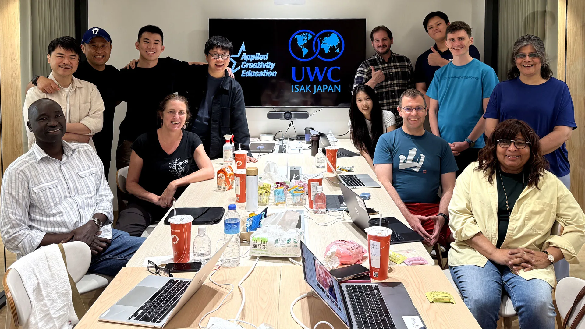
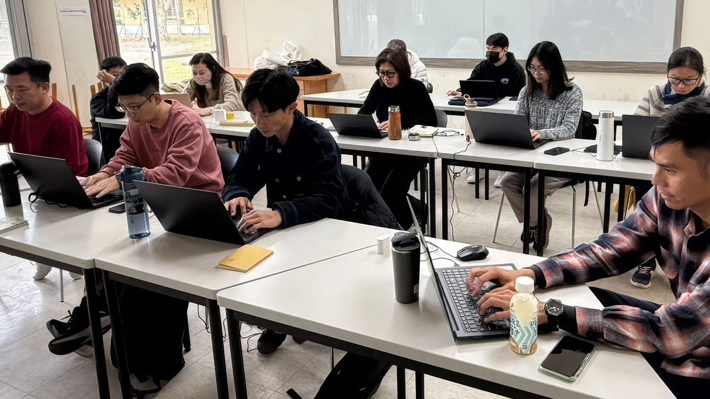
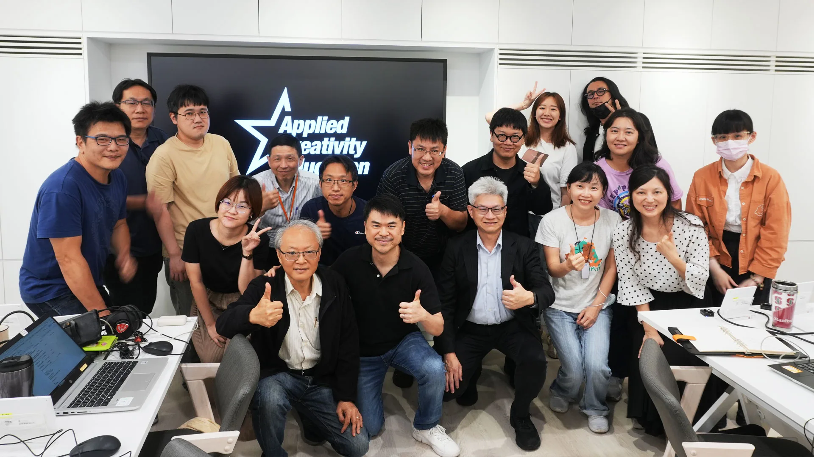
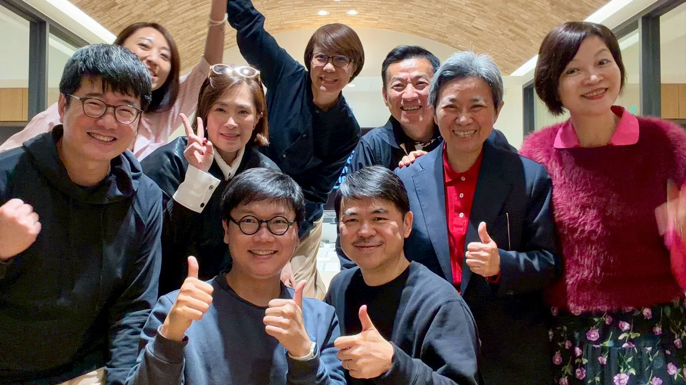

Applied Creativity Engine (Aug 2023-Present) Human-Centered Creativity, Design Thinking, AI-Assisted Ideation, and Entrepreneurial Leadership
Established an ongoing English-language collaboration with UWC ISAK Japan and developed workshops, online courses, printed thinking tools, showcases, and AI-assisted ideation and pitching exercises that translated emerging technologies into practical creative outcomes.
- Project Type
- AI-Powered Creativity Education, Training And Workshop System
- Role
- Co-Founder & Coach, Creative Direction, Curriculum Design, Workshop Facilitation, Executive Presentation
- Key Outputs
- Workshops, Online Courses, Printed Thinking Tools, Certificates, Showcases, Human-Centered AI Ideation And Pitching Exercises
- Channels
- Education, Corporate Training, Leadership Workshops, Presentations, Printed Materials, Online Learning
- Collaborators
- Chris Lin (Founder, KKBOX Group), Matt Cheng (Founder and Managing Partner, Cherubic Ventures), UWC ISAK Japan, Junyi School, Chunghwa Telecom Training Institute, WAVE Brand Leadership
- Workflow
- Learning Strategy Curriculum Design Tool Experimentation Facilitation Feedback Iteration

2024 UWC ISAK JAPAN Teacher Training

2025 Junyi School of Innovation Training

2025 Sharestart Education Foundation Training

2024 UWC ISAK JAPAN Teacher Training

2025 Chunghwa Telecom Institute Training

2026 Gallup CliftonStrengths Training

2026 WAVE Brand Leadership Training
Applied Creativity Engine is an AI-powered creativity education venture co-founded by Joshua Chao with Chris Lin, Founder of KKBOX Group, and Matt Cheng, Founder and Managing Partner of Cherubic Ventures.
Since August 2023, Joshua has designed and delivered 6+ AI and creativity programs for 200+ educators, executives, entrepreneurs, creative professionals, and students across Taiwan and Japan.
Partners include UWC ISAK Japan, Junyi School of Innovation, Chunghwa Telecom Training Institute, WAVE Brand Leadership, and other educational and professional organizations. Joshua established an ongoing English-language collaboration with UWC ISAK Japan and produced workshops, online learning materials, printed thinking tools, showcases, and AI-assisted creative exercises.
The programs combine design thinking, storytelling, entrepreneurship, brand strategy, and AI-assisted research, ideation, visual exploration, storyboarding, image generation, video planning, prototyping, presentation development, and pitching.